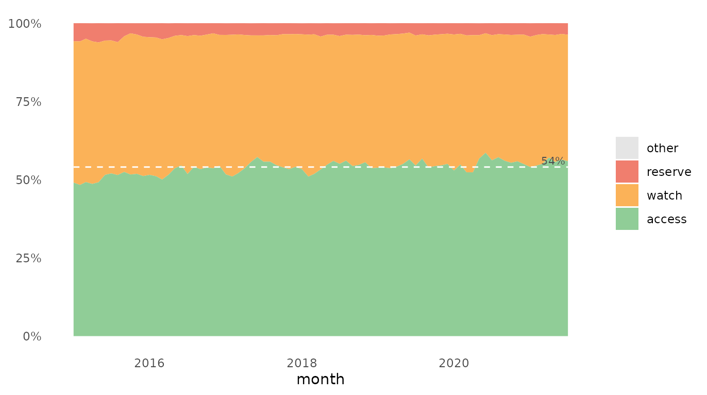
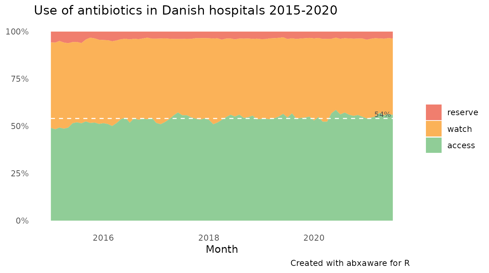

abxaware.RmdAWaRe is a tool developed by the World Health Organization (WHO) to to help countries improve antibiotic treatment, increase access and reduce resistance (https://adoptaware.org/).
AWaRe was introduced in 2017 as a new categorization of antibiotics to guide prescriptions and treatment while monitoring consumption. The three categories are:
Access which indicates the antibiotic of choice for each of the 25 most common infections. These antibiotics should be available at all times, affordable and quality-assured.
Watch which includes most of the “highest-priority critically important antimicrobials” for human medicine and veterinary use. These antibiotics are recommended only for specific, limited indications.
Reserve antibiotics that should only be used as a last resort when all other antibiotics have failed.
WHO suggests that countries should increase the proportion of access antibiotics to correspond to at least 60% of total national consumption
abxaware is an R package that contains a list of antibacterial drugs for systemic use (ATC group J01) and the corresponding AWaRe classification plus functions to aggregate and visualise antibiotic use according to AWaRe.
The classification data frame (abx_aware, see Appendix) contains both the latest 2019 WHO classification, the English classification (Budd 2019) and our own adaptation to Danish guidelines.
In the Danish classification, which is default in abxaware functions, two drugs have been moved up one level: amoxicillin and beta-lactamase inhibitor from access to watch and meropenem from watch to reserve. Additionally, two drugs (sulfapyridine and sulfadiazine) that are unclassified by WHO are included in the Danish AWaRe classification in order to cover nearly all antibiotics used in Danish hospitals.
To create a plot like the one above, you need a data frame with at least two columns: ATC code and amount. The ATC code is the unique drug identifier, and the amount variable is the amount of drug with this ATC code used. Amount is normally given in defined daily dose (DDD) units, but other measures may be used. Additionally, the data frame may include variables for time period and organisational unit allowing for creation of faceted time series plots. Note that only drugs with a complete ATC code with 7 characters can be classified, and that not all drugs have been classified. Unclassifiable drugs appear in the outputs as “other” unless ignore.other = TRUE.
In the following examples we will use the abx_sales data frame. In addition to the atc and ddd columns, abx_sales have a time variable (month) and two unit variables (region and hospital). That is, for each month, atc group and hospital in one of five Danish regions the amount of drug used is found in the ddd variable.
library(abxaware)
dplyr::glimpse(abx_sales)
#> Rows: 51,999
#> Columns: 6
#> $ region <chr> "Hovedstaden", "Hovedstaden", "Hovedstaden", "Hovedstaden", "…
#> $ hospital <chr> "Amager og Hvidovre Hospital", "Amager og Hvidovre Hospital",…
#> $ month <date> 2015-01-01, 2015-01-01, 2015-01-01, 2015-01-01, 2015-01-01, …
#> $ atc <chr> "J01AA02", "J01AA12", "J01CA01", "J01CA02", "J01CA04", "J01CA…
#> $ ddd <dbl> 105.00, 25.00, 143.45, 294.32, 90.99, 796.68, 5.00, 283.33, 5…
#> $ drug <chr> "doxycycline", "tigecycline", "ampicillin", "pivampicillin", …This code creates a single one-dimensional plot.
awr_plot(abx_sales,
atc = atc,
ddd = ddd)
#> Aggregating data using the "dk" AWaRe classificationawr_plot() automatically aggregates data and prints a message telling which classification was used, WHO, UK or DK. By default, the DK classification is used, but the method can be specified using the method argument.
awr_plot(abx_sales, method = 'who')
#> Aggregating data using the "who" AWaRe classification
awr_plot(abx_sales, method = 'uk')
#> Aggregating data using the "uk" AWaRe classificationThe default method for an R session may be specified in advance as an option, for example: options(abxaware.method = 'who').
To split data by organisational unit, provide a unit variable:
awr_plot(abx_sales,
atc,
ddd,
unit = region)
#> Aggregating data using the "dk" AWaRe classificationLikewise, to create a time series plot, provide a time variable:
awr_plot(abx_sales,
atc,
ddd,
time = month)
#> Aggregating data using the "dk" AWaRe classification
Or combine time and unit to create faceted time series plots.
awr_plot(abx_sales,
atc,
ddd,
time = month,
unit = region,
ncol = 1)
#> Aggregating data using the "dk" AWaRe classification
awr_plot(abx_sales,
atc,
ddd,
time = month,
unit = hospital,
ncol = 2)
#> Aggregating data using the "dk" AWaRe classificationThe horizontal line represents the median percentage use of antibiotics in the access group. In case of non-random variation over time, the line is dashed, otherwise solid. To test for non-random variation two rules are employed for unusually long runs of consecutive data points on the same side of the centre line and unusually few crossings of the centre line respectively (Anhøj 2014)). If one or both test are positive, this may be taken as a signal that non-random variation (e.g. trends, shift, or cyclic patterns) is present.
To add title, subtitle, caption etc. to a plot, use the labs function from ggplot2. See ?awr_plot for details on other arguments.
awr_plot(abx_sales,
atc,
ddd,
time = month,
ignore.other = TRUE,
silent = TRUE) +
ggplot2::labs(title = 'Use of antibiotics in Danish hospitals 2015-2020',
x = 'Month',
caption = 'Created with abxaware for R')
As mentioned, data are automatically aggregated before plotting with awr_plot(). If no time and unit arguments are provided, data will be aggregated by AWaRe class. However, when specifying a time and/or a unit argument data will be further aggregated accordingly. Aggregation is performed “behind the scenes” by the awr_aggregate() function. When plotting, only one time and/or one unit variable is allowed. But awr_aggregate() allows for indefinitely many (unnamed) grouping variables.
awr_aggregate(abx_sales,
atc,
ddd)
#> Aggregating data using the "dk" AWaRe classification
#> # A tibble: 1 × 5
#> total reserve watch access other
#> <dbl> <dbl> <dbl> <dbl> <dbl>
#> 1 25286569. 997134. 10693833. 13592934. 2668.
awr_aggregate(abx_sales,
atc,
ddd,
region)
#> Aggregating data using the "dk" AWaRe classification
#> # A tibble: 5 × 6
#> region total reserve watch access other
#> <chr> <dbl> <dbl> <dbl> <dbl> <dbl>
#> 1 Hovedstaden 9964511. 572993. 3764616. 5624234. 2668.
#> 2 Midtjylland 4692156. 132510. 2405504. 2154141. 0
#> 3 Nordjylland 2278616. 36727. 1030179. 1211710. 0
#> 4 Sjælland 3369530. 71470. 1479130. 1818930. 0
#> 5 Syddanmark 4981757. 183433. 2014403. 2783921. 0
awr_aggregate(abx_sales,
atc,
ddd,
region,
hospital,
month)
#> Aggregating data using the "dk" AWaRe classification
#> # A tibble: 1,580 × 8
#> region hospital month total reserve watch access other
#> <chr> <chr> <date> <dbl> <dbl> <dbl> <dbl> <dbl>
#> 1 Hovedstaden Amager og Hvidovre … 2015-01-01 9079. 273. 4241. 4565. 0
#> 2 Hovedstaden Amager og Hvidovre … 2015-02-01 12092. 471. 5256. 6366. 0
#> 3 Hovedstaden Amager og Hvidovre … 2015-03-01 19271. 771. 8432. 10068. 0
#> 4 Hovedstaden Amager og Hvidovre … 2015-04-01 7700 518. 3546. 3636. 0
#> 5 Hovedstaden Amager og Hvidovre … 2015-05-01 10184. 496. 4348. 5340. 0
#> 6 Hovedstaden Amager og Hvidovre … 2015-06-01 12168. 381. 5338. 6449. 0
#> 7 Hovedstaden Amager og Hvidovre … 2015-07-01 11990. 462. 4752. 6776. 0
#> 8 Hovedstaden Amager og Hvidovre … 2015-08-01 11113. 642. 4438. 6033. 0
#> 9 Hovedstaden Amager og Hvidovre … 2015-09-01 13148. 350. 4961. 7837. 0
#> 10 Hovedstaden Amager og Hvidovre … 2015-10-01 12731. 249. 5283. 7198. 0
#> # … with 1,570 more rowsWorld Health Organisation (2019). Adopt AWaRe. https://adoptaware.org/
Mike Sharland et al. (2019). Encouraging AWaRe-ness and discouraging inappropriate antibiotic use – the new 2019 Essential Medicines List becomes a global antibiotic stewardship tool. Lancet Infect Dis. 2019. https://doi.org/10.1016/s1473-3099(19)30532-8.
Emma Budd et al. (2019). Adaptation of the WHO Essential Medicines List for national antibiotic stewardship policy in England: being AWaRe, Journal of Antimicrobial Chemotherapy. https://doi.org/10.1093/jac/dkz321
Ines Pauwels et al. (2021). Hospital antibiotic prescribing patterns in adult patients according to the WHO Access, Watch and Reserve classification (AWaRe): results from a worldwide point prevalence survey in 69 countries, Journal of Antimicrobial Chemotherapy. https://doi.org/10.1093/jac/dkab050
Jacob Anhøj, Anne Vingaard Olesen (2014). Run Charts Revisited: A Simulation Study of Run Chart Rules for Detection of Non-Random Variation in Health Care Processes. https://doi.org/10.1371/journal.pone.0113825
| atc | atc_level | generic_name | aware_who | aware_uk | aware_dk |
|---|---|---|---|---|---|
| J01 | 2 | ANTIBACTERIALS FOR SYSTEMIC USE | |||
| J01A | 3 | TETRACYCLINE ANTIBIOTICS | |||
| J01AA | 4 | Tetracyclines | |||
| J01AA01 | 5 | demeclocycline | watch | ||
| J01AA02 | 5 | doxycycline | access | access | access |
| J01AA03 | 5 | chlortetracycline | watch | watch | |
| J01AA04 | 5 | lymecycline | watch | watch | watch |
| J01AA05 | 5 | metacycline | watch | watch | |
| J01AA06 | 5 | oxytetracycline | watch | watch | watch |
| J01AA07 | 5 | tetracycline | access | access | access |
| J01AA08 | 5 | minocycline | reserve | watch | reserve |
| J01AA09 | 5 | rolitetracycline | |||
| J01AA10 | 5 | penimepicycline | |||
| J01AA11 | 5 | clomocycline | |||
| J01AA12 | 5 | tigecycline | reserve | reserve | reserve |
| J01AA13 | 5 | eravacycline | reserve | reserve | |
| J01AA14 | 5 | sarecycline | |||
| J01AA15 | 5 | omadacycline | |||
| J01AA20 | 5 | combinations of tetracyclines | watch | ||
| J01AA56 | 5 | oxytetracycline, combinations | |||
| J01B | 3 | AMPHENICOLS | |||
| J01BA | 4 | Amphenicol antibacterials, systemic | |||
| J01BA01 | 5 | chloramphenicol | access | watch | access |
| J01BA02 | 5 | thiamphenicol | access | access | |
| J01BA52 | 5 | thiamphenicol, combinations | |||
| J01C | 3 | BETA-LACTAM ANTIBACTERIALS, PENICILLINS | |||
| J01CA | 4 | Penicillins with extended spectrum | |||
| J01CA01 | 5 | ampicillin | access | access | access |
| J01CA02 | 5 | pivampicillin | access | access | |
| J01CA03 | 5 | carbenicillin | watch | watch | |
| J01CA04 | 5 | amoxicillin | access | access | access |
| J01CA05 | 5 | carindacillin | |||
| J01CA06 | 5 | bacampicillin | access | access | |
| J01CA07 | 5 | epicillin | |||
| J01CA08 | 5 | pivmecillinam | access | access | access |
| J01CA09 | 5 | azlocillin | watch | watch | |
| J01CA10 | 5 | mezlocillin | watch | watch | |
| J01CA11 | 5 | mecillinam | access | access | |
| J01CA12 | 5 | piperacillin | watch | watch | watch |
| J01CA13 | 5 | ticarcillin | watch | watch | watch |
| J01CA14 | 5 | metampicillin | |||
| J01CA15 | 5 | talampicillin | |||
| J01CA16 | 5 | sulbenicillin | watch | watch | |
| J01CA17 | 5 | temocillin | watch | watch | watch |
| J01CA18 | 5 | hetacillin | |||
| J01CA19 | 5 | aspoxicillin | |||
| J01CA20 | 5 | penicillins with extended spectrum combinations | |||
| J01CA51 | 5 | ampicillin, combinations | access | ||
| J01CE | 4 | Beta-lactamase sensitive penicillins | |||
| J01CE01 | 5 | benzylpenicillin | access | access | access |
| J01CE02 | 5 | phenoxymethylpenicillin | access | access | access |
| J01CE03 | 5 | propicillin | |||
| J01CE04 | 5 | azidocillin | |||
| J01CE05 | 5 | pheneticillin | watch | watch | |
| J01CE06 | 5 | penamecillin | access | access | |
| J01CE07 | 5 | clometocillin | access | access | |
| J01CE08 | 5 | benzathine benzylpenicillin | access | access | access |
| J01CE09 | 5 | procaine benzylpenicillin | access | access | access |
| J01CE10 | 5 | benzathine phenoxymethylpenicillin | |||
| J01CE30 | 5 | beta-lactamase sensitive penicillin combinations | |||
| J01CF | 4 | Beta-lactamase resistant penicillins | |||
| J01CF01 | 5 | dicloxacillin | access | access | |
| J01CF02 | 5 | cloxacillin | access | access | access |
| J01CF03 | 5 | meticillin | |||
| J01CF04 | 5 | oxacillin | access | access | |
| J01CF05 | 5 | flucloxacillin | access | access | access |
| J01CF06 | 5 | nafcillin | access | access | |
| J01CG | 4 | Beta-lactamase inhibitors, systemic penicillins | |||
| J01CG01 | 5 | sulbactam | |||
| J01CG02 | 5 | tazobactam | |||
| J01CR | 4 | Combinations of penicillins, incl. beta-lactamase inhibitors | |||
| J01CR01 | 5 | ampicillin and beta-lactamase inhibitor | access | access | |
| J01CR02 | 5 | amoxicillin and beta-lactamase inhibitor | access | watch | watch |
| J01CR03 | 5 | ticarcillin and beta-lactamase inhibitor | watch | ||
| J01CR04 | 5 | sultamicillin | access | access | |
| J01CR05 | 5 | piperacillin and beta-lactamase inhibitor | watch | watch | watch |
| J01CR50 | 5 | combinations of penicillins | |||
| J01D | 3 | OTHER BETA-LACTAM ANTIBACTERIALS IN ATC | |||
| J01DB | 4 | First-generation cephalosporins | |||
| J01DB01 | 5 | cefalexin | access | watch | access |
| J01DB02 | 5 | cefaloridine | |||
| J01DB03 | 5 | cefalotin | access | access | |
| J01DB04 | 5 | cefazolin | access | watch | access |
| J01DB05 | 5 | cefadroxil | access | watch | access |
| J01DB06 | 5 | cefazedone | access | access | |
| J01DB07 | 5 | cefatrizine | access | access | |
| J01DB08 | 5 | cefapirin | access | access | |
| J01DB09 | 5 | cefradine | access | watch | access |
| J01DB10 | 5 | cefacetrile | access | access | |
| J01DB11 | 5 | cefroxadine | access | access | |
| J01DB12 | 5 | ceftezole | access | access | |
| J01DC | 4 | Second-generation cephalosporins | |||
| J01DC01 | 5 | cefoxitin | watch | watch | watch |
| J01DC02 | 5 | cefuroxime | watch | watch | watch |
| J01DC03 | 5 | cefamandole | watch | watch | watch |
| J01DC04 | 5 | cefaclor | watch | watch | watch |
| J01DC05 | 5 | cefotetan | watch | watch | |
| J01DC06 | 5 | cefonicid | watch | watch | |
| J01DC07 | 5 | cefotiam | watch | watch | |
| J01DC08 | 5 | loracarbef | |||
| J01DC09 | 5 | cefmetazole | watch | watch | |
| J01DC10 | 5 | cefprozil | watch | watch | watch |
| J01DC11 | 5 | ceforanide | watch | watch | |
| J01DC12 | 5 | cefminox | watch | watch | |
| J01DC13 | 5 | cefbuperazone | watch | watch | |
| J01DC14 | 5 | flomoxef | watch | watch | |
| J01DD | 4 | Third-generation cephalosporins | |||
| J01DD01 | 5 | cefotaxime | watch | watch | watch |
| J01DD02 | 5 | ceftazidime | watch | watch | watch |
| J01DD03 | 5 | cefsulodin | watch | ||
| J01DD04 | 5 | ceftriaxone | watch | watch | watch |
| J01DD05 | 5 | cefmenoxime | watch | watch | watch |
| J01DD06 | 5 | latamoxef | watch | watch | watch |
| J01DD07 | 5 | ceftizoxime | watch | watch | watch |
| J01DD08 | 5 | cefixime | watch | watch | watch |
| J01DD09 | 5 | cefodizime | watch | watch | watch |
| J01DD10 | 5 | cefetamet | watch | watch | watch |
| J01DD11 | 5 | cefpiramide | watch | watch | watch |
| J01DD12 | 5 | cefoperazone | watch | watch | watch |
| J01DD13 | 5 | cefpodoxime | watch | watch | watch |
| J01DD14 | 5 | ceftibuten | watch | watch | watch |
| J01DD15 | 5 | cefdinir | watch | watch | watch |
| J01DD16 | 5 | cefditoren | watch | watch | watch |
| J01DD17 | 5 | cefcapene | watch | watch | watch |
| J01DD18 | 5 | cefteram | watch | watch | |
| J01DD51 | 5 | cefotaxime and beta-lactamase inhibitor | watch | ||
| J01DD52 | 5 | ceftazidime and beta-lactamase inhibitor | reserve | reserve | reserve |
| J01DD54 | 5 | ceftriaxone, combinations | watch | ||
| J01DD62 | 5 | cefoperazone and beta-lactamase inhibitor | watch | ||
| J01DD63 | 5 | ceftriaxone and beta-lactamase inhibitor | watch | ||
| J01DD64 | 5 | cefpodoxime and beta-lactamase inhibitor | |||
| J01DE | 4 | Fourth-generation cephalosporins | |||
| J01DE01 | 5 | cefepime | watch | reserve | watch |
| J01DE02 | 5 | cefpirome | watch | reserve | watch |
| J01DE03 | 5 | cefozopran | watch | reserve | watch |
| J01DF | 4 | Monobactams | |||
| J01DF01 | 5 | aztreonam | reserve | reserve | reserve |
| J01DF02 | 5 | carumonam | |||
| J01DH | 4 | Carbapenems | |||
| J01DH02 | 5 | meropenem | watch | reserve | reserve |
| J01DH03 | 5 | ertapenem | watch | reserve | watch |
| J01DH04 | 5 | doripenem | watch | reserve | watch |
| J01DH05 | 5 | biapenem | watch | watch | watch |
| J01DH06 | 5 | tebipenem pivoxil | watch | watch | |
| J01DH51 | 5 | imipenem and cilastatin | watch | reserve | watch |
| J01DH52 | 5 | meropenem and vaborbactam | reserve | reserve | |
| J01DH55 | 5 | panipenem and betamipron | watch | ||
| J01DH56 | 5 | imipenem, cilastatin and relebactam | |||
| J01DI | 4 | Other cephalosporins and penems in atc | |||
| J01DI01 | 5 | ceftobiprole medocaril | reserve | reserve | reserve |
| J01DI02 | 5 | ceftaroline fosamil | reserve | reserve | reserve |
| J01DI03 | 5 | faropenem | reserve | watch | reserve |
| J01DI04 | 5 | cefiderocol | |||
| J01DI54 | 5 | ceftolozane and beta-lactamase inhibitor | reserve | reserve | reserve |
| J01E | 3 | SULFONAMIDES AND TRIMETHOPRIM ANTIBACTERIALS FOR SYSTEMIC USE | |||
| J01EA | 4 | Trimethoprim and derivatives, systemic antibacterials | |||
| J01EA01 | 5 | trimethoprim | access | access | access |
| J01EA02 | 5 | brodimoprim | |||
| J01EA03 | 5 | iclaprim | |||
| J01EB | 4 | Short-acting sulfonamides | |||
| J01EB01 | 5 | sulfaisodimidine | |||
| J01EB02 | 5 | sulfamethizole | access | access | |
| J01EB03 | 5 | sulfadimidine | |||
| J01EB04 | 5 | sulfapyridine | access | ||
| J01EB05 | 5 | sulfafurazole | |||
| J01EB06 | 5 | sulfanilamide | |||
| J01EB07 | 5 | sulfathiazole | |||
| J01EB08 | 5 | sulfathiourea | |||
| J01EB20 | 5 | short-acting sulfonamide combinations | |||
| J01EC | 4 | Intermediate-acting sulfonamides | |||
| J01EC01 | 5 | sulfamethoxazole | |||
| J01EC02 | 5 | sulfadiazine | access | ||
| J01EC03 | 5 | sulfamoxole | |||
| J01EC20 | 5 | intermediate-acting sulfonamide combinations | |||
| J01ED | 4 | Long-acting sulfonamides | |||
| J01ED01 | 5 | sulfadimethoxine | |||
| J01ED02 | 5 | sulfalene | |||
| J01ED03 | 5 | sulfametomidine | |||
| J01ED04 | 5 | sulfametoxydiazine | |||
| J01ED05 | 5 | sulfamethoxypyridazine | |||
| J01ED06 | 5 | sulfaperin | |||
| J01ED07 | 5 | sulfamerazine | |||
| J01ED08 | 5 | sulfaphenazole | |||
| J01ED09 | 5 | sulfamazone | |||
| J01ED20 | 5 | long-acting sulfonamide combinations | |||
| J01EE | 4 | Combinations of sulfonamides and trimethoprim, incl. derivatives | |||
| J01EE01 | 5 | sulfamethoxazole and trimethoprim | access | access | access |
| J01EE02 | 5 | sulfadiazine and trimethoprim | access | access | |
| J01EE03 | 5 | sulfametrole and trimethoprim | access | access | |
| J01EE04 | 5 | sulfamoxole and trimethoprim | access | access | |
| J01EE05 | 5 | sulfadimidine and trimethoprim | |||
| J01EE06 | 5 | sulfadiazine and tetroxoprim | |||
| J01EE07 | 5 | sulfamerazine and trimethoprim | |||
| J01F | 3 | MACROLIDES, LINCOSAMIDES AND STREPTOGRAMINS | |||
| J01FA | 4 | Macrolides | |||
| J01FA01 | 5 | erythromycin | watch | watch | watch |
| J01FA02 | 5 | spiramycin | watch | watch | watch |
| J01FA03 | 5 | midecamycin | watch | watch | watch |
| J01FA05 | 5 | oleandomycin | watch | watch | watch |
| J01FA06 | 5 | roxithromycin | watch | watch | watch |
| J01FA07 | 5 | josamycin | watch | watch | watch |
| J01FA08 | 5 | troleandomycin | watch | ||
| J01FA09 | 5 | clarithromycin | watch | watch | watch |
| J01FA10 | 5 | azithromycin | watch | watch | watch |
| J01FA11 | 5 | miocamycin | watch | ||
| J01FA12 | 5 | rokitamycin | watch | ||
| J01FA13 | 5 | dirithromycin | watch | watch | watch |
| J01FA14 | 5 | flurithromycin | watch | ||
| J01FA15 | 5 | telithromycin | watch | watch | watch |
| J01FA16 | 5 | solithromycin | watch | ||
| J01FF | 4 | Lincosamides | |||
| J01FF01 | 5 | clindamycin | access | watch | access |
| J01FF02 | 5 | lincomycin | watch | watch | |
| J01FG | 4 | Streptogramins | |||
| J01FG01 | 5 | pristinamycin | watch | watch | watch |
| J01FG02 | 5 | quinupristin/dalfopristin | reserve | watch | reserve |
| J01G | 3 | AMINOGLYCOSIDE ANTIBACTERIALS | |||
| J01GA | 4 | Streptomycins | |||
| J01GA01 | 5 | streptomycin | watch | watch | |
| J01GA02 | 5 | streptoduocin | |||
| J01GB | 4 | Other aminoglycosides in atc | |||
| J01GB01 | 5 | tobramycin | watch | watch | watch |
| J01GB03 | 5 | gentamicin | access | access | access |
| J01GB04 | 5 | kanamycin | watch | watch | |
| J01GB05 | 5 | neomycin | watch | access | watch |
| J01GB06 | 5 | amikacin | access | watch | access |
| J01GB07 | 5 | netilmicin | watch | watch | |
| J01GB08 | 5 | sisomicin | watch | watch | |
| J01GB09 | 5 | dibekacin | watch | watch | |
| J01GB10 | 5 | ribostamycin | watch | watch | |
| J01GB11 | 5 | isepamicin | watch | watch | |
| J01GB12 | 5 | arbekacin | watch | watch | |
| J01GB13 | 5 | bekanamycin | |||
| J01GB14 | 5 | plazomicin | |||
| J01M | 3 | QUINOLONE ANTIBACTERIALS | |||
| J01MA | 4 | Fluoroquinolone antibacterials, systemic | |||
| J01MA01 | 5 | ofloxacin | watch | watch | watch |
| J01MA02 | 5 | ciprofloxacin | watch | watch | watch |
| J01MA03 | 5 | pefloxacin | watch | watch | watch |
| J01MA04 | 5 | enoxacin | watch | watch | watch |
| J01MA05 | 5 | temafloxacin | watch | ||
| J01MA06 | 5 | norfloxacin | watch | watch | watch |
| J01MA07 | 5 | lomefloxacin | watch | watch | watch |
| J01MA08 | 5 | fleroxacin | watch | watch | watch |
| J01MA09 | 5 | sparfloxacin | watch | watch | watch |
| J01MA10 | 5 | rufloxacin | watch | watch | watch |
| J01MA11 | 5 | grepafloxacin | watch | ||
| J01MA12 | 5 | levofloxacin | watch | watch | watch |
| J01MA13 | 5 | trovafloxacin | watch | ||
| J01MA14 | 5 | moxifloxacin | watch | watch | watch |
| J01MA15 | 5 | gemifloxacin | watch | watch | watch |
| J01MA16 | 5 | gatifloxacin | watch | watch | watch |
| J01MA17 | 5 | prulifloxacin | watch | watch | watch |
| J01MA18 | 5 | pazufloxacin | watch | watch | watch |
| J01MA19 | 5 | garenoxacin | watch | watch | watch |
| J01MA21 | 5 | sitafloxacin | watch | watch | watch |
| J01MA22 | 5 | tosufloxacin | watch | watch | |
| J01MA23 | 5 | delafloxacin | watch | watch | |
| J01MA24 | 5 | levonadifloxacin | |||
| J01MA25 | 5 | lascufloxacin | |||
| J01MB | 4 | Other quinolones in atc | |||
| J01MB01 | 5 | rosoxacin | watch | ||
| J01MB02 | 5 | nalidixic acid | watch | ||
| J01MB03 | 5 | piromidic acid | watch | ||
| J01MB04 | 5 | pipemidic acid | watch | ||
| J01MB05 | 5 | oxolinic acid | watch | ||
| J01MB06 | 5 | cinoxacin | watch | ||
| J01MB07 | 5 | flumequine | watch | watch | watch |
| J01MB08 | 5 | nemonoxacin | |||
| J01R | 3 | COMBINATIONS OF ANTIBACTERIALS | |||
| J01RA | 4 | Combinations of antibacterials | |||
| J01RA01 | 5 | penicillins, combinations with other antibacterials | |||
| J01RA02 | 5 | sulfonamides, combinations with other antibacterials (excl. trimethoprim) | |||
| J01RA03 | 5 | cefuroxime and metronidazole | |||
| J01RA04 | 5 | spiramycin and metronidazole | watch | watch | |
| J01RA05 | 5 | levofloxacin and ornidazole | |||
| J01RA06 | 5 | cefepime and amikacin | |||
| J01RA07 | 5 | azithromycin, fluconazole and secnidazole | |||
| J01RA08 | 5 | tetracycline and oleandomycin | |||
| J01RA09 | 5 | ofloxacin and ornidazole | |||
| J01RA10 | 5 | ciprofloxacin and metronidazole | |||
| J01RA11 | 5 | ciprofloxacin and tinidazole | |||
| J01RA12 | 5 | ciprofloxacin and ornidazole | |||
| J01RA13 | 5 | norfloxacin and tinidazole | |||
| J01X | 3 | OTHER ANTIBACTERIALS IN ATC | |||
| J01XA | 4 | Glycopeptide antibacterials | |||
| J01XA01 | 5 | vancomycin | watch | watch | watch |
| J01XA02 | 5 | teicoplanin | watch | watch | watch |
| J01XA03 | 5 | telavancin | reserve | reserve | reserve |
| J01XA04 | 5 | dalbavancin | reserve | reserve | reserve |
| J01XA05 | 5 | oritavancin | reserve | reserve | reserve |
| J01XB | 4 | Polymyxins | |||
| J01XB01 | 5 | colistin | reserve | reserve | reserve |
| J01XB02 | 5 | polymyxin b | reserve | reserve | reserve |
| J01XC | 4 | Steroid antibacterials | |||
| J01XC01 | 5 | fusidic acid | watch | access | watch |
| J01XD | 4 | Imidazole derivatives, antibacterial for systemic use | |||
| J01XD01 | 5 | metronidazole | access | access | access |
| J01XD02 | 5 | tinidazole | |||
| J01XD03 | 5 | ornidazole | |||
| J01XE | 4 | Nitrofuran derivatives, antibacterials for systemic use | |||
| J01XE01 | 5 | nitrofurantoin | access | access | access |
| J01XE02 | 5 | nifurtoinol | |||
| J01XE03 | 5 | furazidin | |||
| J01XE51 | 5 | nitrofurantoin, combinations | |||
| J01XX | 4 | Other antibacterials in atc | |||
| J01XX01 | 5 | fosfomycin | reserve | reserve | reserve |
| J01XX02 | 5 | xibornol | |||
| J01XX03 | 5 | clofoctol | watch | watch | |
| J01XX04 | 5 | spectinomycin | access | access | access |
| J01XX05 | 5 | methenamine | |||
| J01XX06 | 5 | mandelic acid | |||
| J01XX07 | 5 | nitroxoline | |||
| J01XX08 | 5 | linezolid | reserve | reserve | reserve |
| J01XX09 | 5 | daptomycin | reserve | reserve | reserve |
| J01XX10 | 5 | bacitracin | |||
| J01XX11 | 5 | tedizolid | reserve | reserve | reserve |
| J01XX12 | 5 | lefamulin |